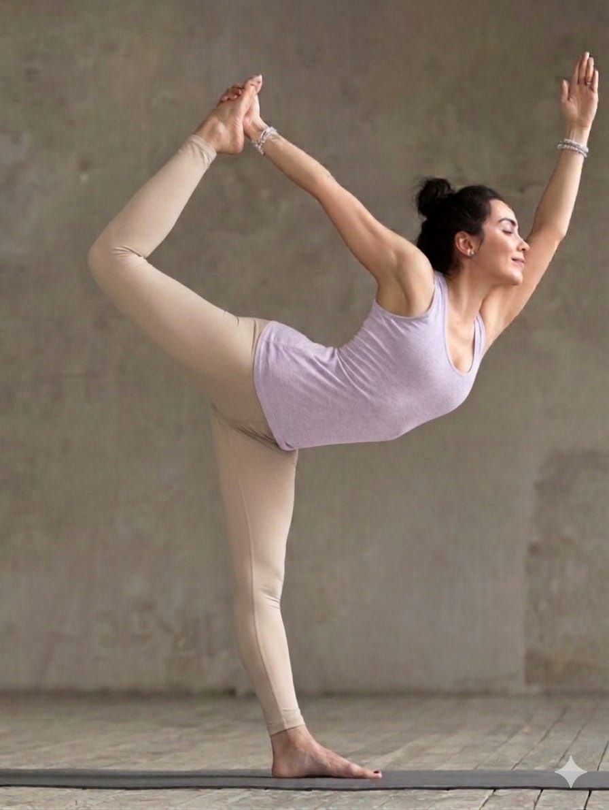

Merasa tubuh mudah goyah dan pikiran sulit fokus? Latihan yoga balance bisa membantu meningkatkan stabilitas, konsentrasi, dan ketenangan dalam kehidupan sehari-hari.

Keseimbangan bukan hanya tentang berdiri dengan satu kaki. Ia juga tentang bagaimana kita tetap tenang di tengah situasi yang tidak stabil.
Dalam kehidupan sehari-hari, kita sering kehilangan keseimbangan — bukan hanya secara fisik, tapi juga mental. Tekanan, distraksi, dan kelelahan membuat kita sulit fokus.
Latihan yoga membantu mengembalikan keseimbangan ini secara perlahan.
Beberapa gerakan yang bisa kamu coba:
Mulai dari gerakan sederhana dan lakukan secara perlahan. Tidak perlu terburu-buru.
Keseimbangan sejati bukan hanya dari tubuh, tapi dari dalam diri. Saat kamu bisa hadir sepenuhnya, tubuh akan mengikuti.
Jika kamu ingin belajar lebih dalam, kamu bisa mencoba kelas yoga balance di Selaras Yoga atau mengenal filosofi Selaras Yoga.
Keseimbangan bukan sesuatu yang dicari, tapi sesuatu yang dilatih setiap hari.
Mulai Latihan Hari Ini